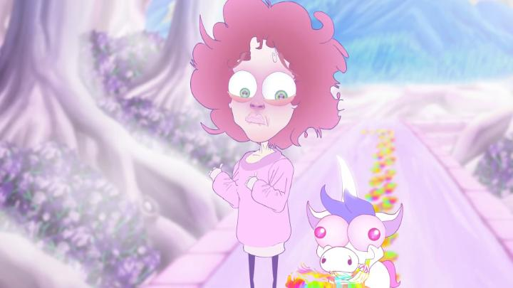

"Unicorn Boy" opens with live-action footage of the director, Matty Kiel, briefly showing that they underwent a pronoun change. This has virtually nothing to do with the story in the semi-autobiographical animated feature, but it helps prepare the viewer to the main character's mental state. It's a complex state to be in, and from the awkward audience questions at a Q&A at OIAF's screening in 2023, I suspect the average audience won't fully appreciate it. But while this certainly isn't the first animated feature to address a filmmaker's personal gender or sexuality identity, "Unicorn Boy" differentiates itself by being wacky and funny in the way only cartoons can. The main character of the movie is Matt, a skinny young adult with a mop of hair and an oversized sweater barely covering his toothpick-thin legs. He's struggling with a relationship breakup he caused, and is in a state of depression both socially and professionally that his overly-optimistic friends can't get him out of. One day, he mysteriously gets whisked away through a coffee-shop bathroom mirror by a unicorn that vomits rainbows. He's in a magical kingdom of unicorns, and the little unicorn that summoned him is its Prince, but his imagination ("an illness" according to his mother, a stressed-out Queen) causes trouble for everyone. Generally speaking, this is a very abstract narrative adventure about understanding and embracing yourself despite your weirdness and differences. That messaging comes through in a basic way against the backdrop of a fantasy kingdom. There's also a plot of the kingdom being in danger, but that gets lost and muddled in favour of the real point of the movie. While it isn't particularly deep or thought-provoking, there is an honesty to it that can be respected. More importantly, it's funny! Inspired by childhood Nickelodean television like "Spongebob Squarepants" and "Ren & Stimpy," the movie isn't afraid to get REALLY wacky and silly. It's great to see the filmmaker wasn't afraid to take this route for a serious topic, while also not sacrificing anything for the real emotional trauma they were going through. This helps tremendously to cross the barrier of a movie feeling too self-important to enjoy, and makes the film easier to watch for anyone who just likes cartoons. It's because of this humour that I liked this far more than any other animated movie I've seen that addresses this sort of topic.  The visual style is... a choice. Everyone is drawn to look like POP-vinyl bobble-head dolls, with massive heads and really massive eyes. It occasionally switches to detailed expressions for emotional or comedic effect. It's kind of cute and ugly at the same time, and this is particularly true for the unicorns. Backgrounds are an interesting attempt at being colourful and abstract, but appear to be an afterthought. The animation was done entirely by the director (wow!), and as can be expected, it's somewhat limited, with the best scenes just looking like the animator having fun on their personal Wacom tablet for an afternoon. In fact, any weaknesses in the visuals can be attributed to a single artist attempting to do everything by themselves, even when the film would have benefited from a larger crew. With many of the side characters being based on real friends of the director (and even attending the film festival with him), it's clear that "Unicorn Boy" is a deeply personal project. These one-person-crew films with such a narrow focus often struggle to come together as a complete success, and this is no exception. But for being able to see the light(-hearted) through the darkness, this is much easier to recommend.
- "Ani" More reviews can be found at : https://2danicritic.github.io/ Previous review: review_Unico_in_the_Island_of_Magic Next review: review_Unicorn_Wars